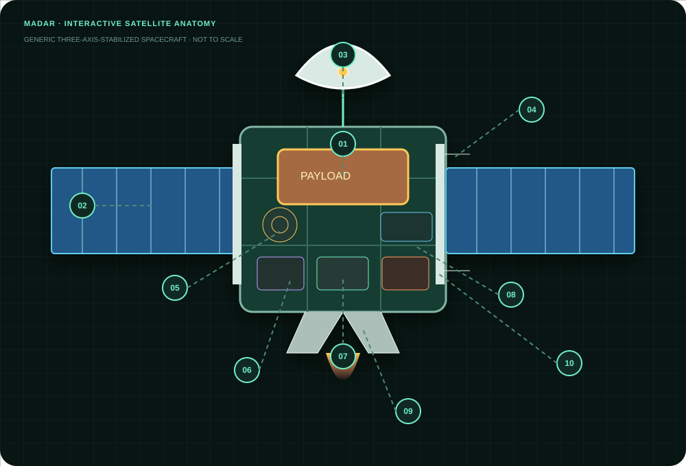

پایگاه دانش زنده · بهروزشده امروز
فضا را حفظ نکن؛
لایهبهلایه بفهم.
از فیزیک نخستین ثانیه پرتاب تا تزریق مداری، طراحی ماهواره و تحلیل دقیق شکستها—با مسیر دانشگاهی، داده زنده و منبع قابل پیگیری.
در مسیرهای آموزشی، کتابخانه دانش، مدارها، پرتابگرها، ماهوارهها، اجزا، شکستها، پرتابهای زنده و مطالب NASA/ESA جستوجو کنید.
جستوجو به حروف فارسی/عربی، فاصله و نیمفاصله حساس نیست و اصطلاحات انگلیسی را نیز میپذیرد.
از فیزیک نخستین ثانیه پرتاب تا تزریق مداری، طراحی ماهواره و تحلیل دقیق شکستها—با مسیر دانشگاهی، داده زنده و منبع قابل پیگیری.
مدار، سقوط آزادی است که پیوسته سطح خمیده زمین را از دست میدهد.
«برای ماندن در مدار باید بیشتر افقی رفت تا بالا.»
یک جسم در ارتفاع ۴۰۰ کیلومتری اگر سرعت افقی نداشته باشد سقوط میکند. آنچه ISS را در مدار نگه میدارد، سرعت مماسی حدود ۷٫۷ km/s است.
نقصهای آموزشی پنج حوزه اصلی در ۷۵ موضوع ساختاریافته تکمیل شدهاند. مباحث تخصصی فقط در دسته «معلومات پیشرفته» قرار گرفتهاند و پیشنیاز هر موضوع مشخص است.
توضیح شهودی، واژگان و مثال؛ بدون ریاضیات سنگین
روابط، محاسبات، طراحی و تحلیل مهندسی
کنترل بهینه، روش عددی، تخمین، SAR/InSAR و MBSE
موضوعی در این سطح قرار میگیرد که بدون تسلط بر ریاضیات دانشگاهی، معادلات دیفرانسیل، احتمال، کنترل یا پردازش سیگنال قابل استفاده ایمن نباشد. این برچسب به معنی اختیاریبودن موضوع نیست؛ بلکه ترتیب صحیح مطالعه را مشخص میکند.
یک مسیر پیشنهادی ۸۳ ساعته با ترتیب پیشنیاز، خروجی قابلاندازهگیری و اصطلاحات انگلیسی هر حوزه.
توالی مرجع یک پرتاب مداری دومرحلهای را بررسی کنید. زمانها و ارتفاعها نمونهاند و برای هر پرتابگر تغییر میکنند.
ارتفاع، میل و خروج از مرکز را به «کاربرد» پیوند دهید؛ سپس با محاسبهگر، سرعت و دوره را بسنجید.
v = √(μ/r)مدل دو جسم؛ اثر J₂ و Drag لحاظ نشده است.VLEO · LEO · MEO · GEO altitude · High Earth
استوایی · مایل · قطبی · Prograde · Retrograde
دایروی · بیضوی · HEO · سهموی · هذلولی
خورشیدآهنگ · زمینآهنگ · زمینایستا · نیمروزآهنگ
Parking · Transfer · GTO · Disposal · Graveyard · Frozen orbit
Lagrange · Halo · Lissajous · NRHO · مدار ماهمرکز و خورشیدمرکز
نوع محموله، پوشش موردنیاز، تأخیر، تفکیک، توان و محیط تابشی با هم مدار مناسب را تعیین میکنند. در این دانشنامه انواع ماهواره، کاربرد، اجزا و منطق انتخاب مدار را بررسی کنید.

نمودار عمومی؛ چیدمان واقعی هر مأموریت متفاوت است.بزرگتر بودن جرم، توان یا نرخ داده به معنی بهتر بودن نیست. معماری خوب، نیاز مأموریت را با حاشیه مناسب، ریسک قابلقبول و کمترین پیچیدگی غیرضروری برآورده میکند.
ESA، NASA، GPS.gov و NOAA؛ پیوند منابع در کارتها و صفحه منابع نرمافزار ثبت شده است.
این صفحه مستقیماً Feedهای رسمی دو آژانس را میخواند. عنوان و متن انگلیسی مرجع باقی میماند و ترجمه خودکار فارسی در کنار آن نمایش داده میشود.
RSS یک Feed انتشار است، نه Webhook. بنابراین رکورد تازه حداکثر در چرخه همگامسازی بعدی ظاهر میشود. اگر منبع موقتاً قطع باشد، آخرین پاسخ معتبر از Cache نمایش داده میشود.
داده Launch Library 2 با ترتیب نزولی زمان. جزئیات هر رکورد را باز کنید و منبع داده را ببینید.
| مأموریت / زمان UTC | پرتابگر | ارائهدهنده | مدار | کشور / پایگاه | نتیجه |
|---|
رخداد، علت نزدیک، علت ریشهای و عامل سازمانی یک چیز نیستند. سطح قطعیت هر پرونده صریحاً نمایش داده میشود.
فهرست زنده، همه رکوردهای شکست Launch Library را بهترتیب زمان نشان میدهد؛ زنجیره علت تفصیلی فقط برای پروندههایی ارائه میشود که گزارش یا شواهد معتبر کافی دارند. «نامعلوم» یک پاسخ علمی معتبر است و با حدس پر نمیشود.
— پرونده عمیقمعماری مراحل، نوع پیشرانه، موتور، ظرفیت و بازیابی. ظرفیتها تقریبیاند و با مدار/عرض پایگاه/پروفایل بازیابی تغییر میکنند.
لینک ویدئوی دارای کپشن را وارد کنید تا متن، خلاصه فارسی، فصلبندی و اصطلاحات فنی استخراج شود.
بدون کلید API برای زیرنویس عمومی کار میکند؛ دسترسی YouTube ممکن است در برخی شبکهها محدود باشد.
ویدئوهای دانشگاهی، مستندات مأموریت و تحلیل پرتاب بهترین نتیجه را میدهند.
خلاصه جای مشاهده بخشهای حساس یا مراجعه به منبع اصلی را نمیگیرد.
محاسبهگرهای مقدماتی برای فهم شهودی. خروجیها تحلیل طراحی نهایی یا شبیهسازی اغتشاشات نیستند.
μ = 398600.4418 km³/s²r = R⊕ + h
v = √(μ/r)
T = 2π√(r³/μ)فرضها: زمین کروی، مدار دایروی، مدل دو جسم، بدون مقاومت جو و J₂.
aₜ=(r₁+r₂)/2
Δv₁=vₜ,p−v₁
Δv₂=v₂−vₜ,aصفحه دو مدار یکسان فرض شده؛ اتلافها و تغییر میل لحاظ نشده است.
Δv = Isp · g₀ · ln(m₀/mf)رانش، گرانش، Drag، Steering Loss و مرحلهبندی در این خروجی ایدهآل لحاظ نشدهاند.
منابع بر پایه نقش دستهبندی شدهاند: مرجع رسمی برای نتیجه بررسی، دادهباز برای تاریخچه، و کتاب/مقاله برای آموزش.
پرتاب مداری، شکست پرتاب، شکست جزئی، شکست بازیابی و آزمون زمینی جدا میشوند.
داده زنده ممکن است اصلاح شود؛ زمان واکشی و URL منبع در پاسخ API نگهداری میشود.
علت نهایی فقط پس از گزارش معتبر ثبت میشود؛ در غیر این صورت «تحقیق باز» است.
ترجمه و خلاصه خودکار برای آموزش است و ادعاهای حساس باید با متن اصلی مقابله شوند.
نسخه اول، بانک زنده LL2 را برای مرور و GCAT را بهعنوان مسیر توسعه تاریخچه جامع بهکار میگیرد. «تمام جزئیات همه مأموریتها» یک پروژه دادهای پیوسته است، نه یک فهرست ثابت؛ بنابراین پوشش و تاریخ بهروزرسانی همیشه نمایش داده میشود.